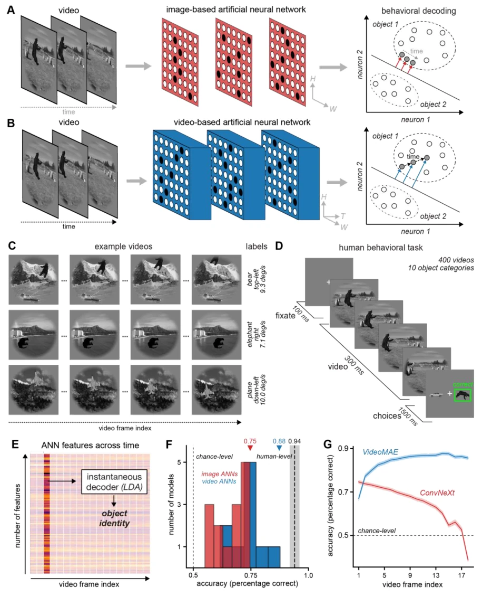

Primate vision reveals a missing principle for robust dynamic AI
Matteo Dunnhofer, Christian Micheloni, Kohitij Kar abspdf
论文点评Review
这篇论文给视频 AI 泼了盆冷水。虽然视频模型在 benchmark 上赢了，但一遇到“换皮不换骨”的测试就原形毕露，运动信息绑定在外观上，根本不具备鲁棒性。灵长类视觉皮层（IT）才是真·大佬，能无视外观变化提取运动。预测性世界模型（如 V-JEPA2）虽然表现最好，能部分对齐 IT 神经活动，但依然没能复刻大脑那种“从外观主导到运动不变”的渐进式演化过程。说白了，现在的 AI 只是记住了视频帧的套路，没学会真正的动态物理直觉。这不仅是视觉问题，更是具身智能理解物理世界的关键缺失。
This paper pours cold water on video AI. Although video models win on benchmarks, they reveal their true form when faced with tests of "changing skin but not bone", where motion information is bound to appearance and fundamentally lacks robustness. The primate visual cortex (IT) is the true expert, capable of extracting motion while ignoring appearance changes. Predictive world models (such as V-JEPA2), although performing the best and partially aligning with IT neural activity, still fail to replicate the brain's gradual evolutionary process "from appearance-dominated to motion-invariant". Simply put, current AI has merely memorized the patterns of video frames and has not learned true dynamic physical intuition. This is not merely a vision problem, but also a critical missing component for embodied intelligence to understand the physical world.
研究动机Motivation
智能视觉必须在动态世界中保持稳健，但现有 ANN 多基于静态图像优化 [1, 3]。视频模型虽引入时空处理 [10-12]，却常利用外观与运动的天然相关性作弊，而非真正解耦 [19]。自然视频基准难以区分是学到了动态结构还是外观线索。此外，fMRI 时间分辨率低，无法捕捉快速神经变换 [21]。灵长类 IT 皮层已知包含运动信息 [7]，但缺乏计算机制解释其如何随时间演化实现外观不变性。本研究旨在填补这一空白，通过对比人类、猕猴与模型，揭示鲁棒动态视觉的缺失原则，为具身 AI 提供生物启发式目标。
Intelligent vision must remain robust in a dynamic world, but existing ANNs are mostly optimized based on static images [1, 3]. Video models although introduce spatiotemporal processing [10-12], often utilize the natural correlation between appearance and motion to cheat, rather than truly decoupling [19]. Natural video benchmarks find it difficult to distinguish whether dynamic structure or appearance cues are learned. Additionally, fMRI temporal resolution is low, unable to capture rapid neural transformations [21]. Primate IT cortex is known to contain motion information [7], but lacks computational mechanisms to explain how it evolves over time to achieve appearance invariance. This study aims to fill this gap, by comparing humans, macaques, and models, reveal the missing principles of robust dynamic vision, provide biologically inspired goals for embodied AI.
方法Method
研究采用“刺激 - 行为 - 神经 - 模型”闭环框架。首先构建自然视频与外观破坏视频（光流噪声）[19]。其次，采集人类行为及猕猴 IT 皮层神经活动（404 神经元）。模型涵盖图像 ANN、视频 ANN、光流模型及预测世界模型。核心评估包括：1) 线性解码器准确率，测试身份、方向、速度解码；2) CKA 分析，量化模型特征与 IT 响应相似度，区分早期（90-180ms）与晚期（300-390ms）对齐；3) 创新提出神经元级“时间变化”指标，计算 t 与 t+30/60ms 响应相关性差异，量化表征演化速率。通过对比模型与 IT 在时间演化上的差异，揭示现有视频模型缺乏渐进式动态重组机制的缺陷，从而定位鲁棒动态视觉的缺失原则。具体实施中，使用噪声归一化 CKA 比较不同模型架构在时空整合下的表现，并控制架构与参数量一致以隔离时间输入贡献。在时间变化分析中，追踪多个视频序列中神经与模型单元的活动轨迹，统计早期与晚期时间窗口的变化中位数，验证 IT 神经元从动态不稳定到稳定的过渡特性，而模型则过早稳定。此方法不仅评估了表征内容的相似性，更深入到了表征演化的动力学层面，为具身智能的动态感知提供了细粒度的评估标准。
The study adopts a "Stimulus-Behavior-Neural-Model" closed-loop framework. First, construct natural videos and appearance-destroyed videos (optical flow noise) [19]. Second, collect human behavior and macaque IT cortex neural activity (404 neurons). Models cover image ANN, video ANN, optical flow models, and predictive world models. Core evaluation includes: 1) Linear decoder accuracy, testing identity, direction, speed decoding; 2) CKA analysis, quantifying model feature and IT response similarity, distinguishing early (90-180ms) and late (300-390ms) alignment; 3) Innovatively propose a neuronal-level "Temporal Change" metric, calculating t vs t+30/60ms response correlation difference, quantifying representation evolution rate. By comparing differences between models and IT in temporal evolution, reveal the defect that existing video models lack progressive dynamic reorganization mechanisms, thereby locating the missing principles of robust dynamic vision. In specific implementation, use noise-normalized CKA to compare performance of different model architectures under spatiotemporal integration, and control architecture and parameter count to be consistent to isolate time input contribution. In temporal change analysis, track activity trajectories of neural and model units in multiple video sequences, calculate the median change of early and late time windows, verify IT neurons' transition characteristics from dynamic instability to stability, while models stabilize too early. This method not only evaluates the similarity of representation content, but goes deeper into the dynamics level of representation evolution, providing fine-grained evaluation standards for embodied intelligence's dynamic perception.
实验Experiments
数据集包含 10 类物体运动视频及对应外观破坏序列。基线涵盖 ConvNeXt、VideoMAE、FusionSeg、V-JEPA2 等。结果显示：人类与猕猴在外观破坏下仍保持高准确率（>0.9），而视频 ANN 降至随机水平。预测模型在行为上接近人类，但在神经对齐上，V-JEPA2 的 CKA 最高（0.36 vs 0.30）。关键发现是时间演化指标：IT 神经元随时间显著稳定（早期变化大，晚期变化小），而 ANN 表征过早稳定，缺乏渐进重组。消融实验证实，仅靠时空整合不足以实现外观不变性，需预测性学习或显式光流。此外，通过对比不同模型在自然与外观破坏条件下的解码性能，量化了跨外观泛化能力，发现光流模型与预测模型表现最佳，但仍无法完全复现 IT 的神经动力学特征。
The dataset contains 10 classes of object motion videos and corresponding appearance-destroyed sequences. Baselines cover ConvNeXt, VideoMAE, FusionSeg, V-JEPA2, etc. Results show: Humans and macaques maintain high accuracy (>0.9) under appearance destruction, while video ANN drops to random level. Predictive models are close to humans in behavior, but in neural alignment, V-JEPA2's CKA is highest (0.36 vs 0.30). Key finding is temporal evolution metric: IT neurons stabilize significantly over time (early change large, late change small), while ANN representations stabilize too early, lacking progressive reorganization. Ablation experiments confirm, relying solely on spatiotemporal integration is insufficient to achieve appearance invariance, need predictive learning or explicit optical flow. Additionally, by comparing decoding performance of different models under natural and appearance-destroyed conditions, quantified cross-appearance generalization ability, found optical flow models and predictive models perform best, but still cannot fully replicate IT's neural dynamic characteristics.
其他图片Other Figures

Figure 1. Testing image and video recognition artificial neural networks (ANNs) as models of human dynamic visual object recognition. A-B. Conceptual comparison between image-based and video-based ANNs. Dynamic stimuli in the form of videos were presented to both classes of neural network models. A. Image-based ANNs. Each video frame is processed independently, producing frame-wise feature representations that are object-selective but not integrated across time. The absence of temporal context prevents these networks from integrating evidence across time to disambiguate the visual input, limiting their ability of separating objects into behavioral manifolds. B. Video recognition ANNs. Multiple frames are processed jointly through spatiotemporal computations that integrate information acros